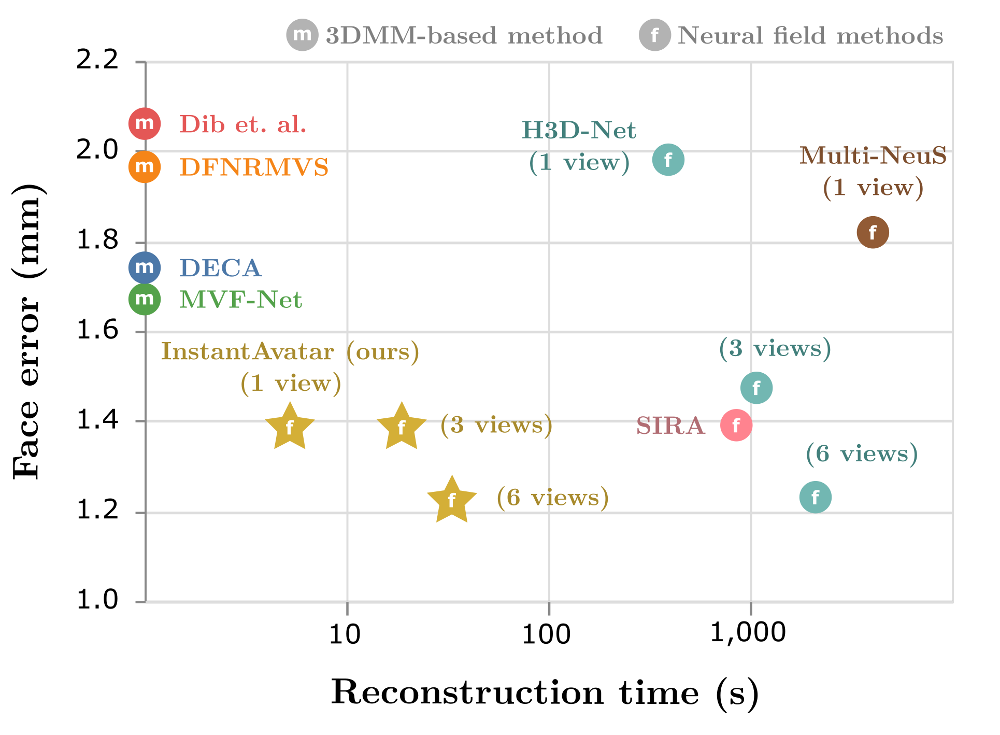
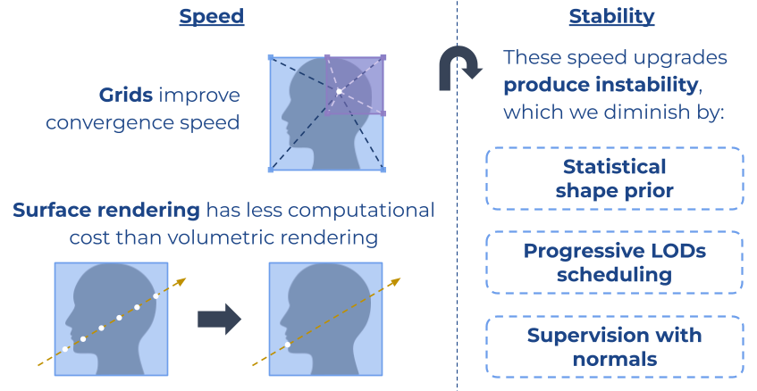
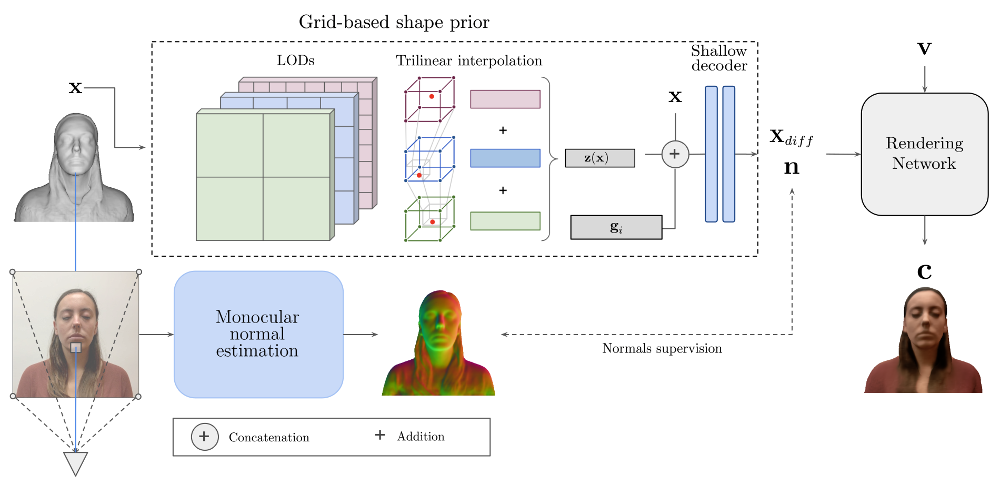
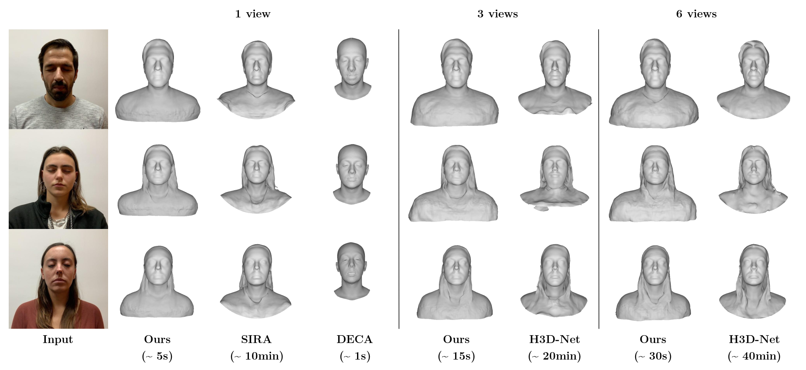
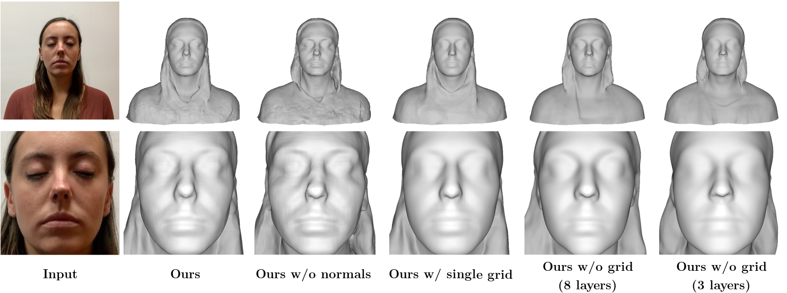
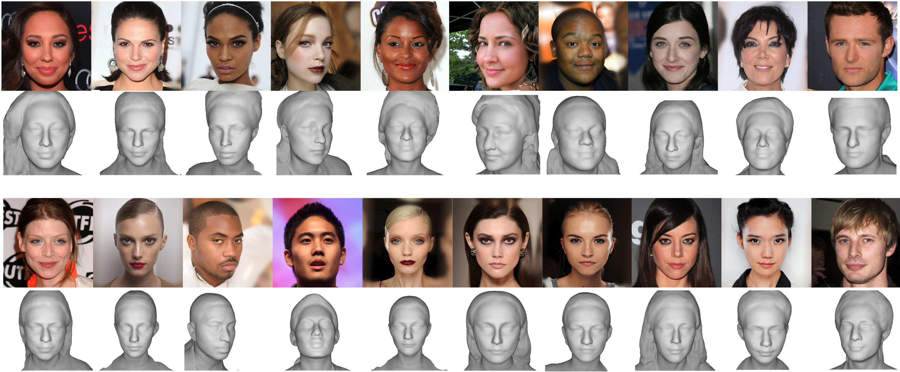

01 — Overview
Overview.
Abstract
Recent advances in full-head reconstruction have been obtained by optimizing a neural field through differentiable surface or volume rendering to represent a single scene. While these techniques achieve an unprecedented accuracy, they take several minutes, or even hours, due to the expensive optimization process required. In this work, we introduce InstantAvatar, a method that recovers full-head avatars from few images (down to just one) in a few seconds on commodity hardware. In order to speed up the reconstruction process, we propose a system that combines, for the first time, a voxel-grid neural field representation with a surface renderer. Notably, a naive combination of these two techniques leads to unstable optimizations that do not converge to valid solutions. In order to overcome this limitation, we present a novel statistical model that learns a prior distribution over 3D head signed distance functions using a voxel-grid based architecture. The use of this prior model, in combination with other design choices, results into a system that achieves 3D head reconstructions with comparable accuracy as the state-of-the-art with a 100x speed-up.

Method
Combined with some techniques originated from a few key insights, our 3D reconstruction pipeline builds on top of IDR and H3D-Net. We find that surface rendering is more computationally efficient than volumetric rendering since its sampling size is considerably smaller. Therefore, we show that using grid-based representations together with this rendering method increase the convergence speed significantly. However, both of these concepts make the optimization process more challenging in terms of stability. In order to diminish these side effects: we employ a statistical shape prior for guiding the optimization first steps through a valid latent space; using progressive key schedules to make proper usage of each level-of-detail (similar to concurrent work Neuralangelo); and supervising with normal cues for increasing its robustness.


02 — Results
Results.
The proposed method is compared against parametric model-based methods like DECA in single-view face reconstruction, and per-scene-optimization approaches like H3D-Net and SIRA in single-view and multi-view full-head reconstruction, using the H3DS dataset.



03 — Code
Code.
This work was conducted as part of an industrial research collaboration with Crisalix Labs. Consequently, the underlying source code and trained models are proprietary assets of Crisalix SA and cannot be made publicly available.
This repository only hosts the project page for the publication. For further technical details regarding the architecture, training schedule, and evaluation setup, please refer to the paper on arXiv.
04 — Acknowledgments
Acknowledgments.
This work has been partially supported by: MoHuCo PID2020-120049RB-I00 funded by MCIN/AEI/10.13039/501100011033; DeeLight PID2020-117142GB-I00 funded by MCIN/ AEI /10.13039/501100011033; and the industrial doctorate 2021 DI 00102 funded by the Government of Catalonia.
05 — Cite
Citation.
If you find our work useful, please consider citing it:
@inproceedings{canela2024instantavatar,
title={InstantAvatar: Efficient 3D Head Reconstruction via Surface Rendering},
author={Canela, Antonio and Caselles, Pol and Malik, Ibrar and Ramon, Eduard and Garcia, Jaime and Sanchez-Riera, Jordi and Triginer, Gil and Moreno-Noguer, Francesc},
booktitle = {International Conference on 3D Vision (3DV)},
year={2024}
}